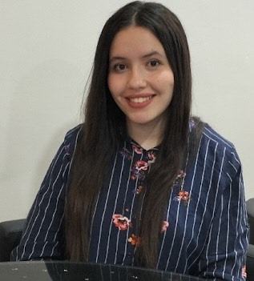
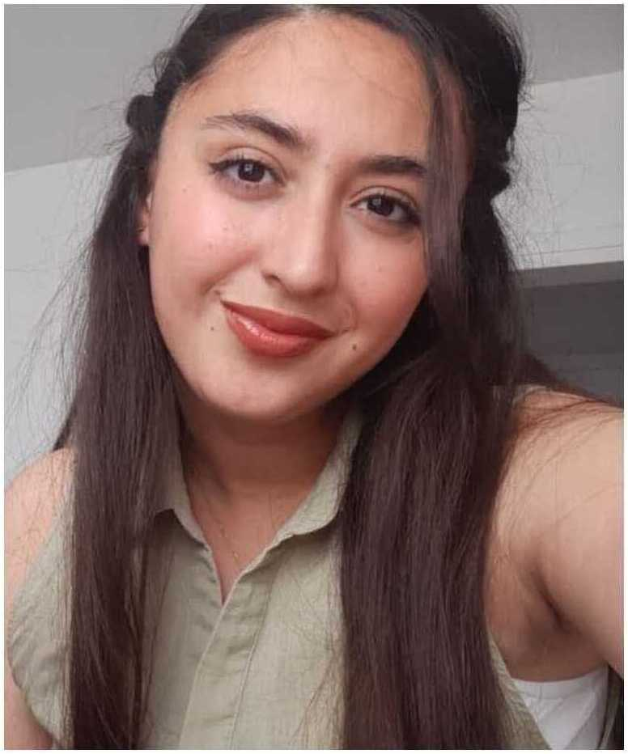
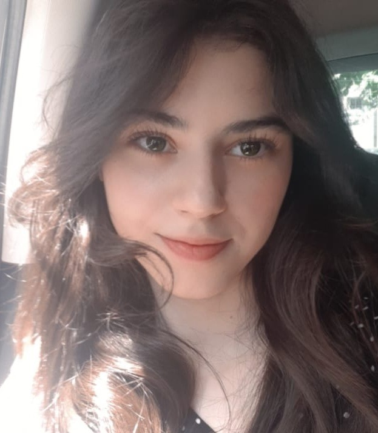

Notre Équipe
Nous sommes des étudiantes en 2ème année informatique et une équipe passionnée par l'intelligence artificielle, collaborant pour rendre ce domaine accessible.
Ouardia ACHAB
Lisa ISSAD
Celine ARKAM
Répartition des Tâches
| Ouardia | Lisa | Celine | Binôme (Collaboration) |
|---|---|---|---|
| Conception de l'interface graphique | Développement des algorithmes IA | Gestion du projet et coordination | Collaboration sur l'intégration et les tests |
| Ergonomie et expérience utilisateur | Optimisation des performances | Documentation et suivi des avancées | Validation et corrections des fonctionnalités |
| Conception des scénarios de test | Débogage et correction des erreurs | Rédaction du guide utilisateur | Réalisation du cahier des charges |
Promotion et Points Forts de l'Équipe
Nous sommes des étudiantes motivées et engagées dans notre formation en informatique. Notre équipe se distingue par sa complémentarité, son esprit d'innovation et sa capacité à travailler efficacement en collaboration.
- Compétences techniques : Développement en Java, conception d'algorithmes d'intelligence artificielle, maîtrise des design patterns.
- Organisation : Gestion rigoureuse du projet, respect des délais et méthodologie agile.
- Créativité : Capacité à trouver des solutions innovantes aux défis techniques.
- Esprit d'équipe : Communication fluide, entraide et coopération sur toutes les phases du projet.